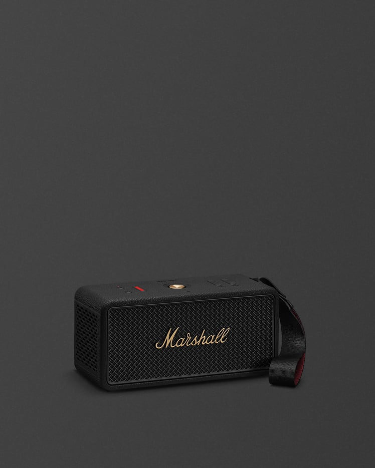

자리를 바꿔도 이어지는 소리
True Stereophonic이 360도 사운드를 만들어 스피커 주변으로 음악을 전달합니다.
손잡이를 잡고 출발하는 하루. 이동하기 좋은 형태에 긴 재생 시간과 직관적인 컨트롤을 담았습니다.
제품 살펴보기 ↓
위쪽 패널의 노브를 돌려 소리를 조절하고, 스트랩을 잡아 다음 장소로 옮깁니다. 듣는 자리와 움직이는 시간이 자연스럽게 이어집니다.

하루의 동선을 따라 움직이는 스피커.
여럿이 둘러앉는 공간과 이동하는 일상에 어울리는 포터블 스피커. 직접 조절하는 사운드와 긴 재생 시간을 함께 담았습니다.
True Stereophonic이 360도 사운드를 만들어 스피커 주변으로 음악을 전달합니다.
하루의 이동과 긴 청취를 고려한 배터리 재생 시간을 제공합니다.
상단의 조작부와 Marshall Bluetooth 앱으로 베이스와 트레블을 조절할 수 있습니다.
Middleton II / Front view
재생·충전 시간은 공식 시험 기준이며 음량, 설정과 사용 환경에 따라 달라집니다.
충전 뱅크 기능으로 이동 중 휴대전화를 충전할 수 있습니다. 스피커의 배터리를 함께 사용하므로 재생 시간은 사용 조건에 따라 달라집니다.
상단의 베이스·트레블 조작부 또는 Marshall Bluetooth 앱에서 음색을 조절할 수 있습니다.
공식 기준 완전 충전에는 약 3시간이 걸리며, 20분 충전으로 약 5시간 재생을 지원합니다. 충전 환경과 사용 조건에 따라 달라질 수 있습니다.
공식 안내 기준 30시간 이상의 휴대 재생을 지원하며, 실제 시간은 설정과 사용 환경에 따라 달라집니다.
상단의 컨트롤과 마샬 블루투스 앱을 통해 제품을 조작할 수 있습니다. 지원 기능은 공식 제품 안내를 확인하세요.